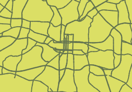
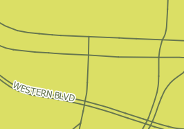

You may be surprised by the fact that not many labels showed up. Depending on your map's scale, it is possible that none appear.

Because most of the roads are split at road intersections, the labels don't fit in the lines and you need to zoom to larger scales for the labels to finally show up.

In the next step, we solve that problem.
Click Move to next step.